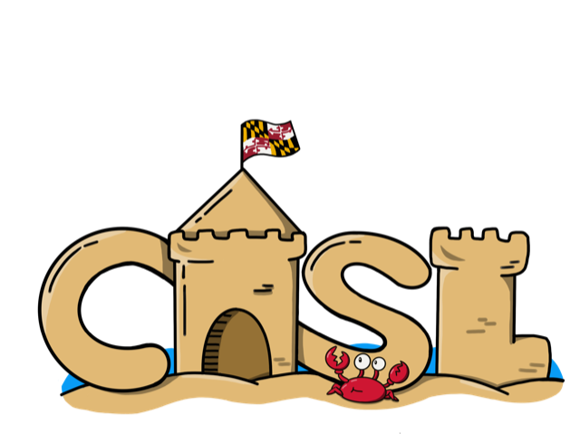

Hardware Prototyping
- AMD Alveo FPGAs
- AMD Zynq SoC
- High-level synthesis
- Xilinx Vitis
- Xilinx Runtime
- TAPA
- RapidStream
PhD candidate · University of Maryland, College Park
I close the gap between peak and achievable
My research focuses on improving resource utilization and developing efficient accelerators for AI and scientific computing workloads. My thesis argues that we must integrate data scheduling, multi-tenancy and dynamic reconfiguration to achieve the peak theoretical gains of a fabric.
I am actively seeking full-time roles in industry
Aug 2022 — now
University of Maryland, College Park
Expected Graduation: May 2027
University of Maryland, College Park
Aug 2018 — May 2022
Lahore University of Management Sciences (LUMS), Pakistan
May 2026 — now
Annapurna Labs, Amazon · Cupertino, CA
Optimizing mixture-of-experts LLMs on Trainium 2 and 3, down through the Neuron Kernel Interface, the compiler and the communication collectives.
May 2023 — now
Computer Architecture & Systems Lab (CASL) · UMD
Building efficient accelerators for AI and scientific computing workloads.

All the papers below are named after stars and constellations.
MICRO Seoul, South Korea 2025
MICRO Austin, TX 2024
DAC Long Beach, CA 2026
DAC San Francisco, CA 2025
IEEE CAL Journal 2025
Under review
Under review
Under review
Under review
In progress
In progress
Get in touch
If you work anywhere near the territory of sparse kernels, AI accelerators or systems for ML — or you just want to argue about my research thesis — I am easy to reach.